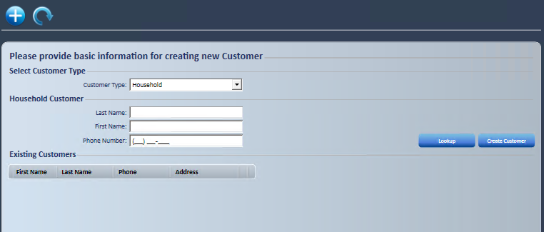
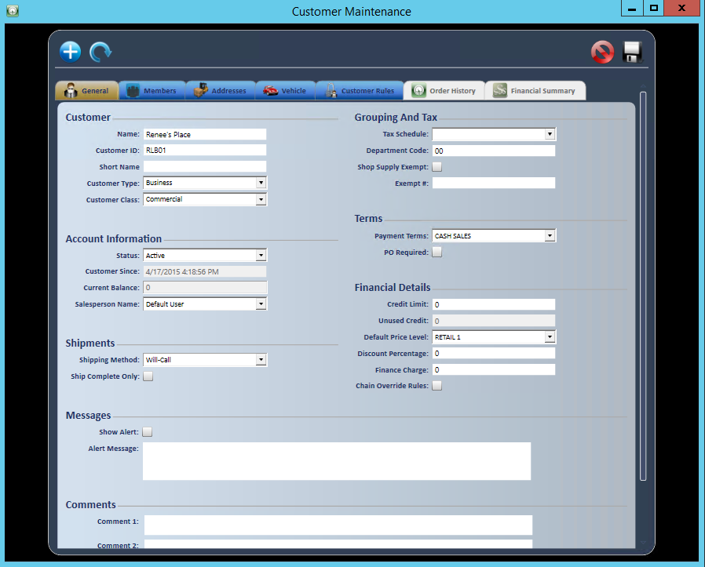
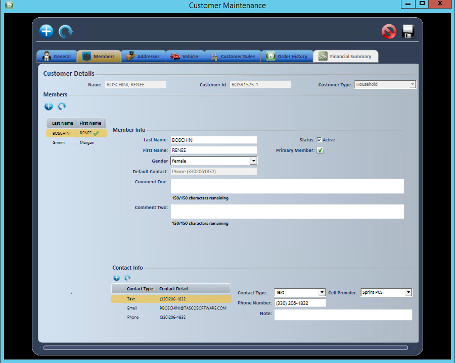
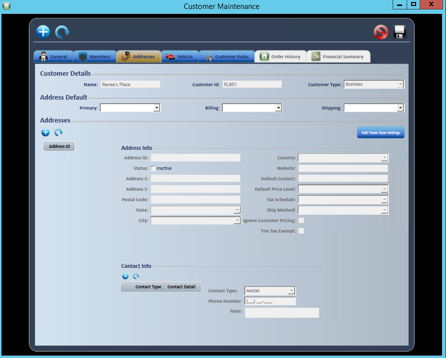
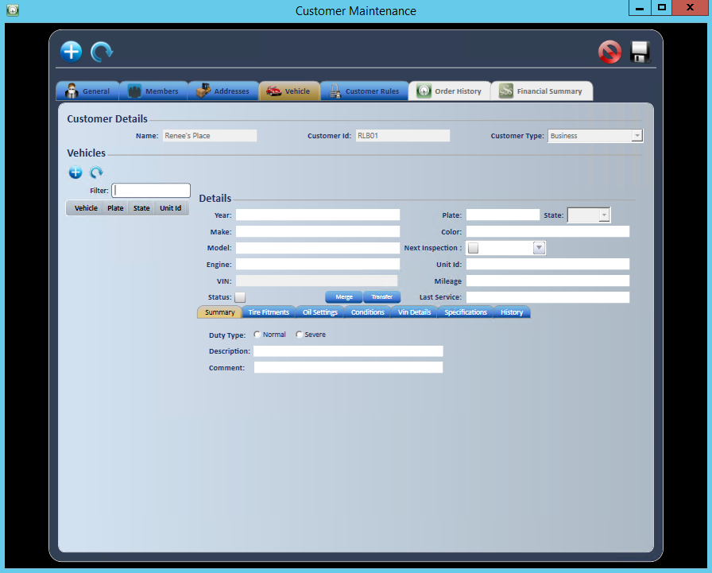
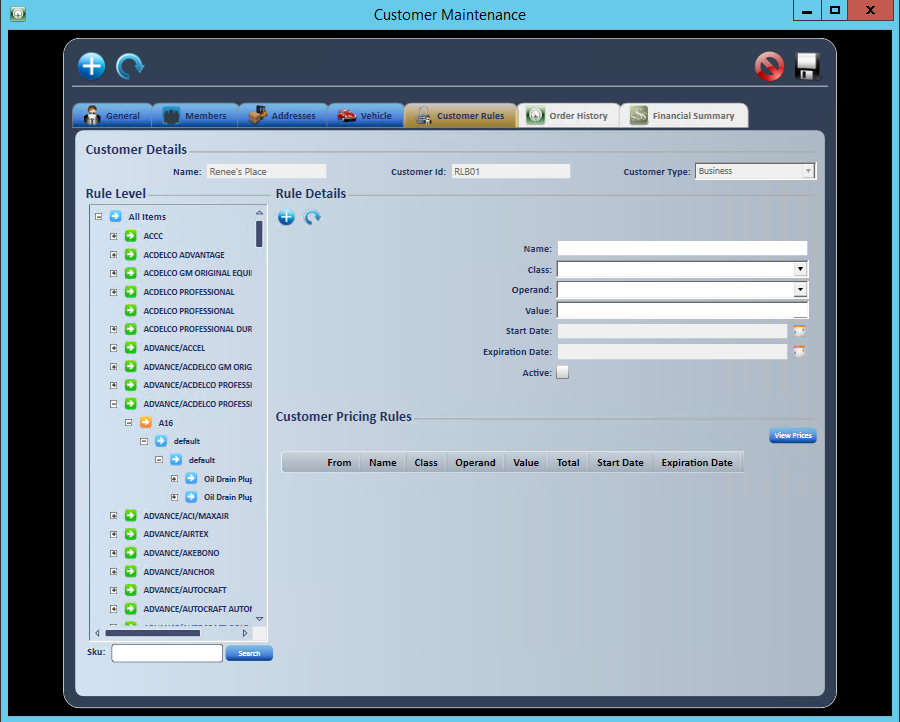
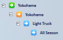
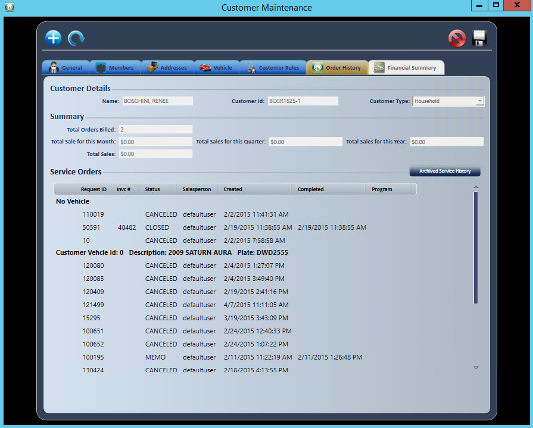

Customers
Use customer setup to create and maintain your Accounts Receivable customers. Customer setup is one of the top three areas where consistency, completeness and accuracy greatly affect your workflow.
Create a customer
- Go to Manage; Customer.

- Select the Customer Type. Business is the most common.
- Enter the customer information to check that the customer doesn't already exist.
- Existing customers with matching data display under existing customers.
- Select Create Customer.

General tab
The General tab holds the customer's general information. Fill it in based on your business practices and procedures.
- Customer Name: The customer's legal name.
- Customer ID: Fills in automatically unless you choose to override it.
- Short Name: An abbreviated, searchable name.
- Customer Type: Check that it's correct.
- Customer Class: Select from the dropdown list of classes you set up.
- Status: Active by default. Inactive customers don't display, and setting a customer Inactive also makes all of its members inactive. Hold puts the customer on credit hold. Cash Only hides the Store Account payment method.
- Customer Since: A calculated field you can't edit.
- Current Balance: A calculated field imported from your financial software.
- Salesperson Name: The person responsible for the account.
- Shipping Method: Select Pickup.
- Ship Complete Only: Check only if the customer prefers to have the entire order ship at one time.
- Tax Schedule: Select the tax from the dropdown. The customer is taxable by default unless you choose Exempt. Select No if the default tax rate should be that of the servicing store.
- Department Code: Select the department code. If you don't use department codes, select 00.
- Shop Fee Exempt: Check if the customer is exempt.
- Exempt #: Enter the exemption number if the exemption box is checked.
- Payment Terms: Select the terms approved by your credit manager.
- PO Required: Check only if every order must have a PO.
- Credit Limit: Enter the amount approved by your credit manager. Available for Business customers only.
- Unused Credit: A calculated field imported from your financial software.
- Default Price Level: Select the price level from the dropdown. If any of the customer's addresses has its own price level, you're asked "Would you like to change the price level for all of this customer's addresses?" Select Yes to update them all.
- Discount Percentage: Enter a percentage if it applies.
- Finance Charge: Enter a percentage if it applies.
- Chain Override Rules: Check if it applies.
- Show Alert: Check to display an alert dialog box.
- Alert Message: Free-form field, up to 1000 characters.
- Comments 1: Free-form field.
- Comments 2: Free-form field.
- Retread Customer: Check if it applies.

Members tab
Member information is usually created on the service request, but you can also view, create and maintain it in the customer record. Fill it in if you want.

Addresses tab
The Addresses tab holds address and pricing information for each address. Address information can be different from the general customer information. Fill it in based on your business practices and procedures.
- Select Add
 to add an address, then fill in these fields.
to add an address, then fill in these fields.
- Address ID: PRIMARY fills in for the first address. You can change it to any label. You can create multiple addresses.
- Status: Active by default.
- Address 1: The UPS approved address. You can verify an address at www.usps.com. We suggest ALL CAPS and no punctuation.
- Address 2: Other address information, such as a PO Box.
- Postal Code: Enter the zip code. City and State fill in automatically. Required.
- Country: Select from the dropdown. Check that the city matches the postal service approved city.
- Website: The customer's website, if they have one.
- Default Contact: The main contact, if there is one.
- Default Price Level: Defaults from the General tab. Change it if this address is different.
- Tax Schedule: Defaults from the General tab. Change it if this address is different.
- Ignore Customer Pricing: Check if customer pricing should be ignored for this address.
- Tire Tax Exempt: Check if this address is tire tax exempt.
Add contact information
- Select Add .
- Select the Contact Type: NoSet, Email, Fax, Phone, Phone 2 or Text.
- Selecting Text lets you text the customer from the service request. With two-way texting, replies show in the SMS Hub. See Customer Communication.
- Enter the phone number.
- Enter notes if needed.
- Select Add.
- Go back to the top of the Addresses tab and fill in the address default information.
- Enter the right address ID for each.

Vehicle tab
Vehicle information is usually created on the service request, but you can also view, create and maintain it in the customer record. Fill it in if you want.

- To add a vehicle, select add (Add New Vehicle), then enter the Plate and Color.
- Mileage is not entered here. It is recorded on the order.
- Check Load Inactive Vehicles to include inactive vehicles in the list.
- In the vehicle's details, the Details area can be collapsed to make more room for the tabs below.
- On the History tab, select Show Details to see the items on each order. Select Hide Details to go back.
Customer Rules tab
You can set customer price rules at any level of the inventory tree, down to the SKU. A rule set on a branch applies to that branch and every branch and SKU below it. You can also select all items, but then the rule applies to ALL items, including non-inventoried items.
Create a customer price rule
- Select the branch to set the rule on. Use + to open levels.
- To set the rule on a single SKU, use the Search box.
- Select the plus sign .
- The rule level you selected displays in the Rule Detail section.

- Enter a Name based on the tree branch or SKU the rule is for. Name is required.
- Select a Class.
- Cumulative: A chained rule.
- Additive: Works the same as a cumulative rule.
- Fixed: Sets a fixed price that overrides price level rules.
- Margin Ceiling/Margin Floor
- Round Nearest: Rounds to the nearest value assigned.
- Round Up: Rounds up to the nearest value assigned.
- Base Change Rules: Changes the base factor for pricing or cost to something other than the default setting.
- Matrix: Sets pricing based on a range of price or a range of units.
- Select an Operand from the dropdown: %, G% or $. The GP% formula is Base/(1.00-GP%).
- Enter the Value for the operand you selected. Negative values are allowed.
- Select a Start Date from the calendar if needed.
- Select an Expiration Date from the calendar if needed.
- If you don't need an expiration date, leave the default. A new rule's Expiration Date defaults to 15 years from the day it's created.
- Make sure the rule is checked as active.
- The finished rule displays in the Customer Pricing Rules section.

- Select View Prices to check that the rule displays correctly in general inventory search.
- Select Save
 when you're done.
when you're done.

Order History tab
The Order History tab shows all orders for the customer, and lets you see Archived Service History from a previous system.
Orders from the Last 30 Days show by default. Use Dates to pick another range, or Custom for your own dates.
Select Show Details to see the items on each order.
- Highlight the order.
- Select Print or Open Order.
Select Archived Service History when you need orders from a previous system.
Custom Fields tab (User Defined)
Use custom fields to store extra information about a customer by address ID, such as program account numbers or tax exempt numbers.
Give your administrator the field names and field numbers to create. Each range of field numbers holds one type of data.
- Fields 1-5: bit (check box)
- Fields 6-10: varchar(50)
- Fields 11-15: varchar(200)
- Fields 16-20: integer
- Fields 21-30: numeric (12,2)
- Fields 31-35: datetime
Financial Summary tab
The Financial Summary tab shows Balance Due, Payment Information and Open Receivables with aging (Future Due, Current, Over 30 to Over 120).
Note: This tab isn't shown if your company uses QuickBooks Online or TireBooks.
Communication tab
The Communication tab shows texts and other messages with the customer. See Customer Communication (Texting).
Note: This tab isn't shown for the cash customer.
Cards On File tab
The Cards On File tab shows the customer's saved cards. See Electronic Payments.
E-commerce tab
If your company uses the AMI/Mopar integration, use the E-commerce tab to set up each customer's e-commerce details by address.
Before you start: TCS sets up the AMI/Mopar integration for your company. You need the Customer Management - eCommerce Tab access right.
- Under Address E-commerces, select the address.
- Select Add New E-commerce.
- Enter the E-commerce Info: E-commerce Identification, Electronic Ordering, Append Orders, Compare PO Number, E-commerce UID, E-commerce Password, Default Sales Location, Second Sales Location, Third Sales Location, Mopar Dealer Code, Ford Dealer Code and GM Dealer Code.
- Checking Electronic Ordering fills E-commerce UID and E-commerce Password with the Customer ID when they are blank.
Important: Selecting Refresh E-commerce List reloads the saved records. Any unsaved changes are lost.
AMI/Mopar orders
When a dealer places an order through AMI/Mopar, TireWorks HD creates an open Service Request for the customer whose Mopar, Ford or GM Dealer Code matches the order.
- The Service Request is created at that e-commerce record's Default Sales Location.
- The dealer's order reference is saved as the order's PO number, and the parts and quantities ordered are added as line items.
The alert "New AMI Order received: Service Request [Order ID: ...] has been created for ..." displays in the SMS Hub. See Customer Communication (Texting).
Open the order from the alert or from the Service Request tab on the Home screen, then work and invoice it like any other Service Request.
Edit a customer record
- Select Find.
- Select Customer.
- Enter the customer information you know.
- Highlight the customer and select the center icon (a man) to open the customer record.
Merge duplicate customers
Use Customer Merge to combine a duplicate Household customer into the customer record you want to keep. The duplicate's members, addresses, contacts, vehicles and order history can be moved to the kept customer, and the duplicate is then removed.
Before you start: You need the Customer Merge access right. The Customer Merge icon displays only for users who have it.
- Select Find; Customer and search for the duplicate customer.
- Hover over the duplicate in the results and select the Customer Merge icon, next to the Customer Details icon.
- Only Household customers can be merged. Any other type shows "Please select a valid 'Household' Customer".
- At "Do you want to merge this customer with another household?", select Yes.
- The Customer Merge window opens with the duplicate under From (Duplicate) Customer.
- Under To (Base) Customer, select Select... and choose the customer to keep. It must be a different customer.
- Use the Members, Addresses and Vehicle tabs to bring over what you want to keep. The duplicate's items are on one side and the kept customer's items are on the other.
- Move: Moves the selected member, address or vehicle to the kept customer.
- Merge (Members and Addresses): Moves the orders of the selected duplicate member or address onto the selected member or address of the kept customer.
- Replace (Vehicle): Replaces the kept customer's selected vehicle with the duplicate's selected vehicle.
- Copy Order (Vehicle): Moves the orders of the duplicate's selected vehicle onto the kept customer's selected vehicle.
- Contacts: Select a contact and select Move to add it to the selected member or address of the kept customer.
- Select Save, then select Yes at the confirmation.
- The confirmation warns "This process is not reversible."
- When the merge finishes, "Customer Id : [Id] was successfully merged." displays.
Important: After a merge, the duplicate customer no longer exists. Comments 2 on the kept customer records which Customer Id was merged into it and when.